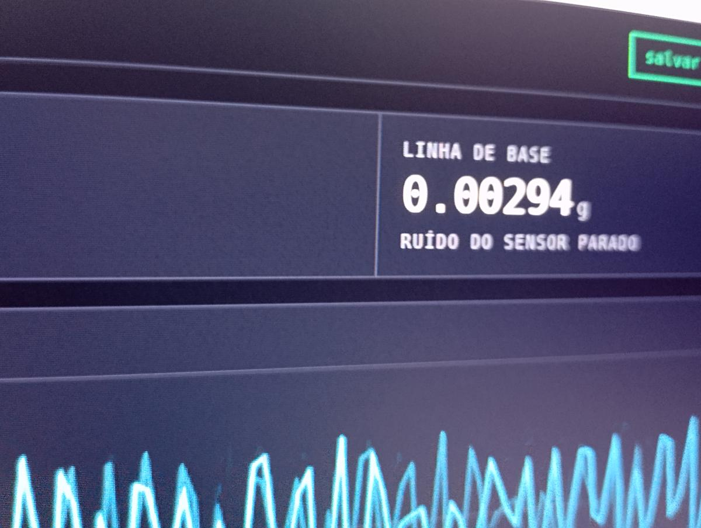
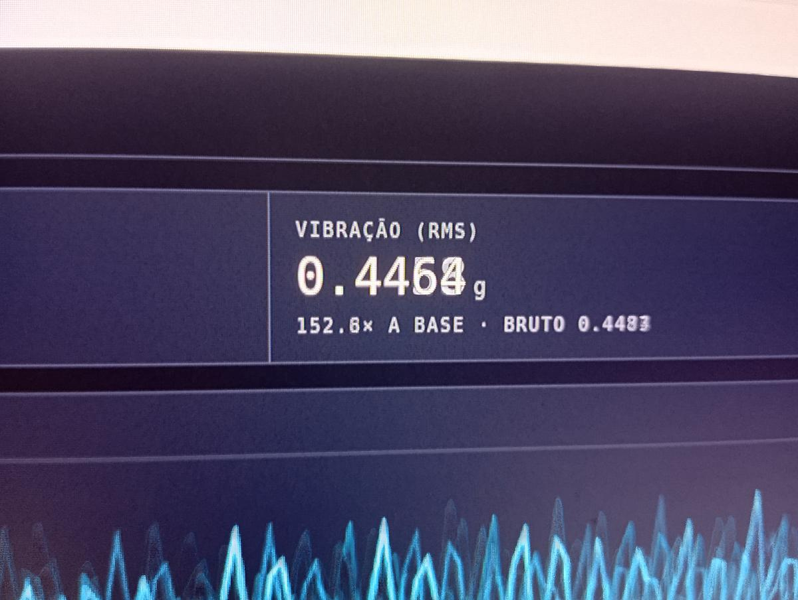
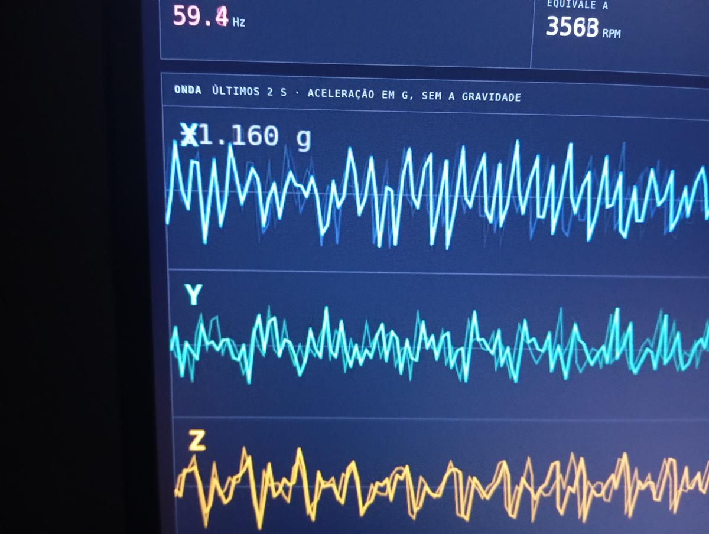
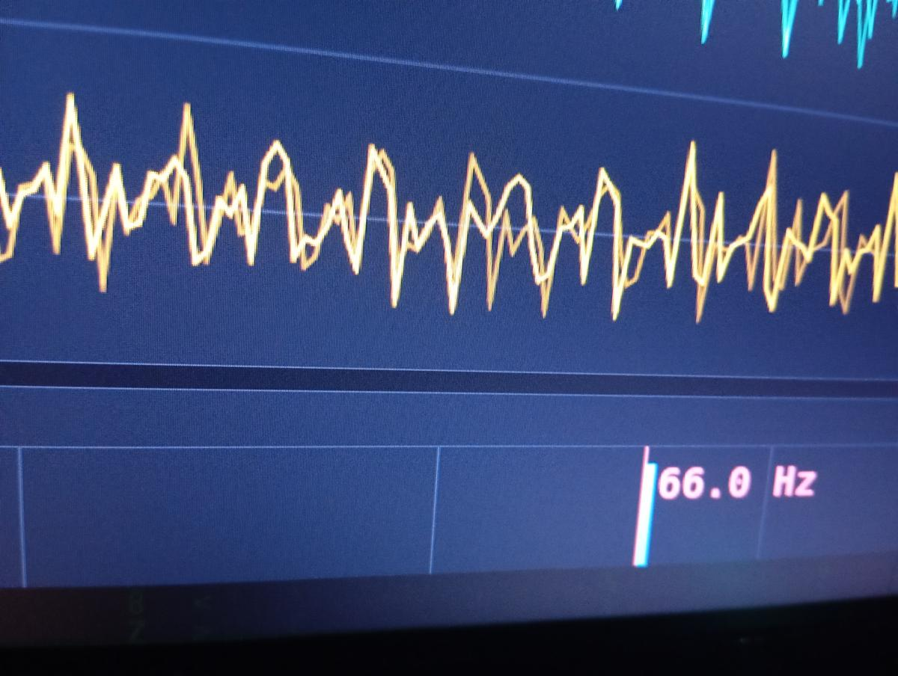
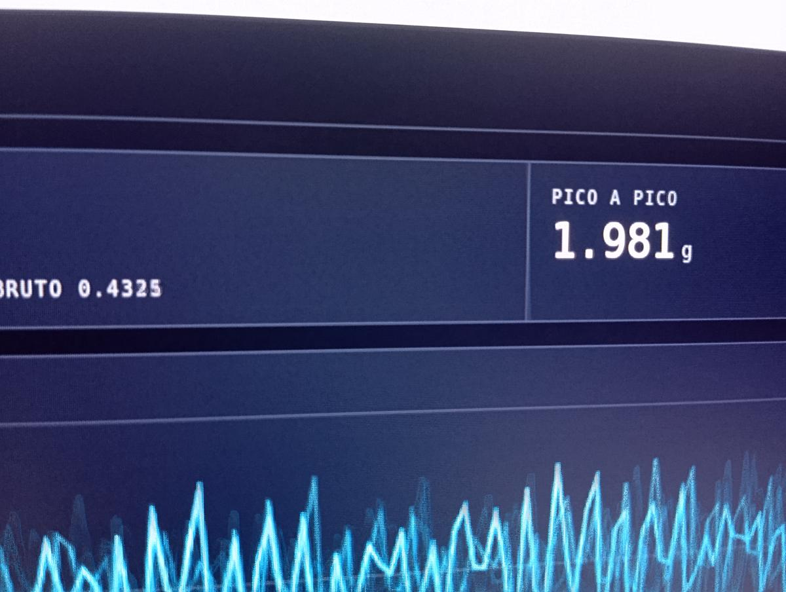
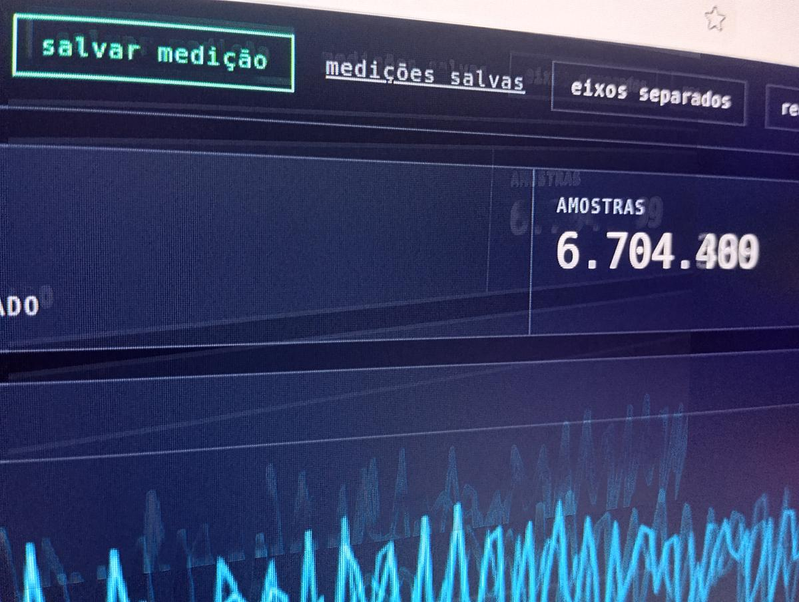
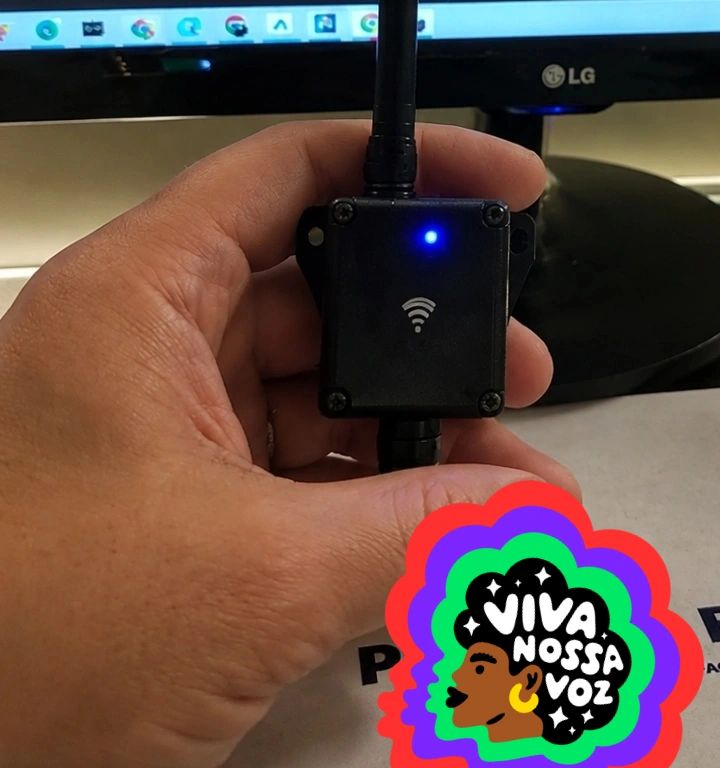

← Neon · Vibração ao Vivo · relatório técnico
Um acelerômetro comum, um motor girando a 3600 RPM num chão de fábrica, e uma norma internacional. O diagnóstico saiu de um pico só.
começar ↓o que foi medido
Os dados vêm de manutenção preditiva em campo — colunas de elevação, redutores e conjuntos motrizes em operação. O sensor foi instalado sobre a máquina rodando, não numa bancada.
A taxa de amostragem foi de 199 amostras por segundo, e o histórico passou de 6,7 milhões de amostras.
os números, lidos do painel
n = 60·fEssa última linha é a que autoriza tudo o que vem depois. Um sinal 140 vezes acima do ruído é sinal, não é imaginação do aparelho.
parte I · a física
Uma volta do eixo é um ciclo. Frequência é ciclo por segundo, rotação é volta por minuto — então a conversão é só o 60:
n = 60 · f f = 67,2 Hz → n = 4032 RPM
o painel mostrou 4031 RPMTodos os pares medidos batem com erro menor que 0,1%. Isso prova que o pico do espectro é mesmo a rotação do eixo — e não interferência elétrica ou outra coisa girando por perto.
Aceleração, velocidade e deslocamento são a mesma coisa integrada no tempo. Em valores RMS, cada integração divide pela frequência angular:
v_rms = a_rms / ω ω = 2πf
x_rms = a_rms / ω²
a_rms = 0,4080 g = 4,001 m/s², f = 67,2 Hz, ω = 422,2 rad/s
v_rms = 4,001 / 422,2 = 9,48 mm/s
x_rms = 4,001 / 422,2² = 22,4 µm (pico a pico ≈ 63 µm)O eixo se desloca 22 micrômetros — um quinto da espessura de um fio de cabelo. A aceleração cresce com o quadrado da frequência, então frequência alta gera muita aceleração com pouquíssimo movimento.
parte II · a matemática
O gráfico de barras que o painel mostra é a Transformada de Fourier do sinal no tempo. O sinal é amostrado, então o que roda de verdade é a versão discreta:
X_k = Σ a_n · e^(−i2πkn/N) f_k = k · f_s/NE há um limite que não se negocia — o teorema de Nyquist: com 199 amostras por segundo, a maior frequência mensurável sem distorção é metade disso.
f_Nyquist = f_s / 2 = 99,5 Hz o pico está em ~60–67 Hz ✓ dentroSe o pico estivesse acima de 99,5 Hz, o número na tela seria mentira — e pareceria igualmente convincente. Conferir esse limite é o que separa medição de chute.
O fator de crista compara o pico com o RMS: diz o quanto o sinal é "pontudo".
CF = a_pico / a_rms = 0,9905 / 0,4325 = 2,29
seno puro: CF = √2 ≈ 1,41
medido: CF ≈ 2,3 → tem harmônico e algo impulsivo juntoparte III · o diagnóstico
Toda a energia concentrada num único pico, na própria frequência de rotação (ordem 1×), radial e estável, é a assinatura clássica de desbalanceamento de massa do rotor.
Se fosse trinca, folga ou defeito de rolamento, apareceriam picos em outras ordens (2×, 3×) ou bandas laterais, com fator de crista bem mais alto (4 a 6). Não é o caso. O quadro aponta para desbalanceamento.
A ISO 10816 mede em velocidade RMS. Convertendo, a máquina está entre 9,5 e 11,7 mm/s — e para máquina de porte médio (Classe II) isso cai na pior faixa:
Recomendação: verificar fixação e base,
balancear o conjunto rotativo, e reavaliar buscando v_rms < 2,8 mm/s
— de volta para as zonas A/B.
a parte que quase ninguém escreve
O acelerômetro não é calibrado — é um MEMS de celular. As amplitudes têm caráter comparativo, não metrológico.
A conversão de aceleração para velocidade assume que a energia se concentra na frequência dominante — uma aproximação de banda estreita, válida aqui porque o espectro tem um pico só, e falsa num sinal espalhado.
E como o pico oscila em torno de 60 Hz, convém confirmar com tacômetro que ele é mecânico (rotação) e não interferência elétrica da rede.
Nada disso derruba o diagnóstico. Só diz até onde ele vale — que é o que separa um laudo de um chute com gráfico bonito.
a prova
Todo número desta página saiu de uma destas telas. Não são capturas montadas depois: são fotos do monitor com a máquina girando.



n = 60·f
acontecendo na tela. Abaixo, os três eixos: X é o dominante.



o documento
Cinco páginas: fotos do campo, as telas do painel, as deduções passo a passo, o sinal no tempo, o espectro FFT e a faixa da ISO 10816.
para levar
Um número só — 66 Hz — vira rotação, vira velocidade, vira faixa de norma e vira ordem de serviço. O sensor não diagnostica nada: quem diagnostica é a conta que você faz depois dele.
Vibração ao Vivo · relatório de 6 de setembro de 2026 · dados de medição real em campo, acelerômetro não calibrado